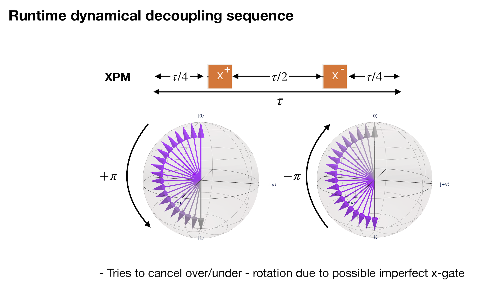
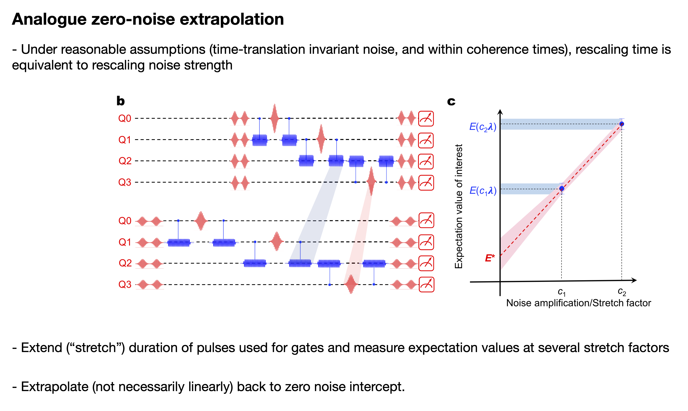
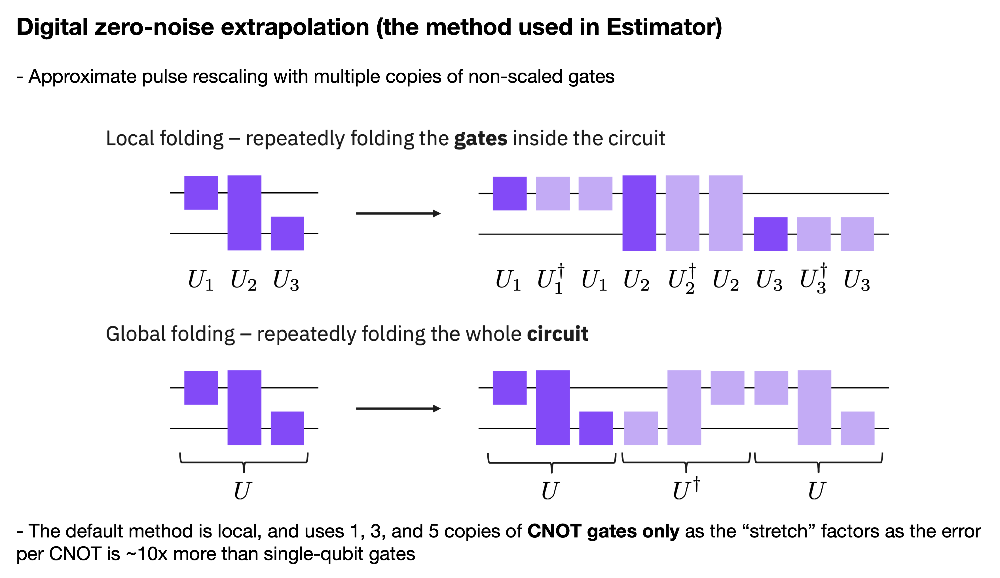
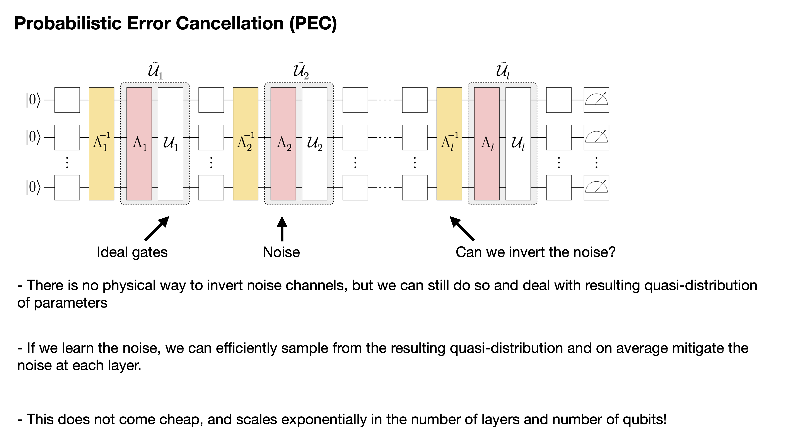
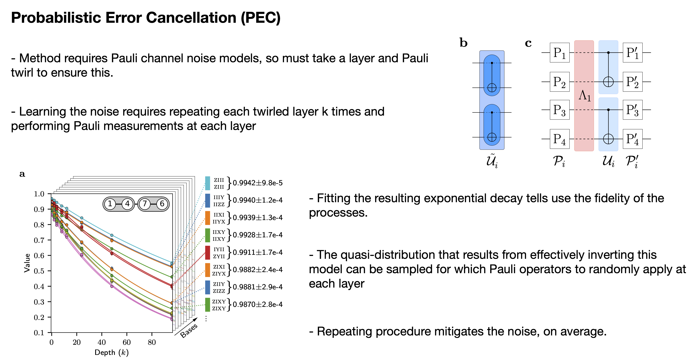

Qiskit Runtime - IV#
- IBM Qiskit Runtime: pip install qiskit-ibm-runtime
Background#
One of the primary abstractions used in the Runtime is providing a simple interface by which advanced error supression and mitigation techniques can be leveraged. Here we will go over the key suppression and mitigation advances in the Runtime. As we will see, these options are controlled by the resilience_level flag that activates more complex mitigation protocals as the level increases.
Advanced methods such as zero-noise extrapolation and probablistic error cancellation can be assumed to be very much in the beta stage. Your mileage may vary.
Frontmatter#
import numpy as np
from qiskit import *
from qiskit.quantum_info import hellinger_fidelity
# Parameter class
from qiskit.circuit import Parameter
# Get sampled expectation value function
from qiskit.result import sampled_expectation_value
# Operators from Qiskit
from qiskit.quantum_info import SparsePauliOp
# The IBM Quantum Runtime
from qiskit_ibm_runtime import QiskitRuntimeService
from qiskit_ibm_runtime import Sampler, Estimator, Session
# Tool to generate preset Passmangers
from qiskit.transpiler.preset_passmanagers import generate_preset_pass_manager
# Plotting tools
import matplotlib.pyplot as plt
try:
plt.style.use('quantum-light')
except:
pass
%config InlineBackend.figure_format = 'retina'
service = QiskitRuntimeService()
sim = service.get_backend('ibmq_qasm_simulator')
backend = service.get_backend('ibm_peekskill')
Error suppression with Runtime#
One of the simplest things to automate is quantum circuit error suppression. Error suppression can loosely be defined as any circuit transformation that reduces the possibility of generating errors when the circuit is executed. Two important examples of this are gate optimization and dynamical decoupling.
Gate optimization is something that every user has already been taking advantage of when using Qiskit. When mapping circuits to hardware, the Qiskit transpiler function automatically applies some amount of gate optimization. How much optimization is done is controlled by the optimization_level keyword argument in transpile. The possible options range from level 0 -> level 3, with level 1 being the default. In practice, all users should use optimization_level=3 as it yields the best performance across most families of circuits.
In contrast, dynamical decoupling (DD) is error suppression in absence of gates. Namely, qubits that remain idle for extended periods of time are susceptible to relaxation and dephasing. Dynamical decoupling helps suppress these sources of errors.
The use of error suppression in Runtime is governed by the optimization_level argument. This follows the Qiskit argument of the same name, with the added feature of including DD at optimization_level=3.
Although Qiskit itself defaults to optimization_level=1, if transpiling the circuits in the Runtime primitives then the default optimization_level=3. There are a host of suppression techniques that are enabled at this level:
try:
pm = generate_preset_pass_manager(3, backend)
except:
pass
else:
display(pm.draw())
In addition to this, the circuit is scheduled (timing information added), and a specific DD sequence is added:

Lets try to vary the optimization_level and see what it does to our output fidelity. Here we will use the Estimator and the controlled-Hadamard ladder circuit. Here let us look at the difference when turning off all optimizations verses the Runtime default of level 3:
def cntrl_hadamard_ladder(N, measurements=False):
qc = QuantumCircuit(N)
qc.x(range(N))
qc.h(range(N))
for kk in range(N // 2, 0, -1):
qc.ch(kk, kk - 1)
for kk in range(N // 2, N - 1):
qc.ch(kk, kk + 1)
if measurements:
qc.measure_all()
return qc
Let us make a 12Q version of our ladder and the usual \(\langle Z^{\otimes N}\rangle\) expectation value operator and run using optimization_level=0 and optimization_level=3. We also need to make sure to turn off the default mitigation (which we will get to in the next section) by setting resilience_level=0
N = 12
qc = cntrl_hadamard_ladder(N)
oper = SparsePauliOp.from_list([('Z'* N, 1)])
Run our two jobs in a session:
suppresion_jobs = []
with Session(backend=backend):
estimator = Estimator()
suppresion_jobs.append(estimator.run(qc, oper, shots=1e4, optimization_level=0,
resilience_level=0))
suppresion_jobs.append(estimator.run(qc, oper, shots=1e4, optimization_level=3,
resilience_level=0))
Grab the resulting expectation values
suppression_res = [job.result().values[0] for job in suppresion_jobs]
suppression_res
[-0.005, 0.13]
Recall that for this example, the ideal answer is 0.446. While in both cases we are nowhere close to the desired answer, the answer at optimization_level=0 really highlights the need for error suppression techniques like advanced gate optimiation methods, better qubit routing, and error aware qubit selection; all of which are enabled by default in the Runtime.
Other important information is returned in the metadata of the result:
suppresion_jobs[1].result().metadata
[{'variance': 0.9831, 'shots': 10000}]
Here, the Estimator is returning the variance of the result and the number of shots taken. Together they can used to construct error estimates such as the standard deviation:
metadata = suppresion_jobs[1].result().metadata[0]
print('Standard deviation:', np.sqrt(metadata['variance']/metadata['shots']))
Standard deviation: 0.009915139938498095
Error mitigation in Runtimes#
While error suppression tries to prevent errors from occuring in the first place, error mitigation attempts to deal with those errors that do occur. There are two basic types of error mitigation, those that correct measurement errors, and those that correct for gate errors. Some methods can combine both. The table below summarizes what mitigation technics are enabled at each resilience_level setting:
Resilience setting |
Sampler |
Estimator |
|---|---|---|
Level 0 |
No mitigation |
No mitigation |
Level 1 (default) |
M3 readout correction |
TREX readout correction |
Level 2 |
No mitigation |
ZNE (no readout correction) |
Level 3 |
No mitigation |
PEC |
Level 1#
The default level 1 setting turns on readout error mitigation for both the Sampler and Estimator. However, two different methods are used to perform this mitigation. First, the Sampler uses the matrix-free measurement mitigation (M3) method that computes a quasi-distribution of corrected values in a truncated probability space. The Estimator instead uses the twirled-readout mitigation (TREX) method, which does not produce an output probability distribution, but is useful for mitigating expectation values. In both cases there is a price to pay in terms of an increased variance in the output. This increase can be quantified in terms of an “overhead” that is the factor of additional shots that needs to be taken to recover the variance of the unmitigated output.
Let us turn on resilience_level=1 (along with using the default optimization level) and see what we get:
with Session(backend=backend):
estimator = Estimator()
sampler = Sampler()
# We are going to be explicit and set resilience_level=1 even though it is default
mitigation_expval_res = estimator.run(qc, oper, shots=1e4, resilience_level=1).result()
mitigation_quasi_res = sampler.run(qc.measure_all(inplace=False), shots=1e4, resilience_level=1).result()
The Estimator result comes back much better:
mitigation_expval_res.values[0]
0.3123601343784994
So we that resilience_level=1 does a much better job than before; an indication that short-depth circuits like the one used here are heavily affected by readout errors. The remaining loss of accuracy is primary related to gate errors, and requires additional mitigation.
As already mentioned, there is a price to pay when performing mitigation that shows up as an increase in the variance of the resulting expectation values:
metadata = mitigation_expval_res.metadata[0]
metadata
{'variance': 5.162082860855353,
'shots': 10000,
'readout_mitigation_num_twirled_circuits': 16,
'readout_mitigation_shots_calibration': 8192}
print('Standard deviation:', np.sqrt(metadata['variance']/metadata['shots']))
Standard deviation: 0.02272021756246043
Comparing to our previous answer with resilience_level=0, the variance has gone up by a factor of ~5 here. This means that more shots must be taken if one wants to get a mitigated expectation value with the same precision as the unmitigated value.
Using the Sampler to compute the same expectation value also results in improvement:
sampled_expectation_value(mitigation_quasi_res.quasi_dists[0], oper)
0.3602571145307969
The metadata from the Sampler is not the same as the Estimator. Rather it returns readout_mitigation_overhead that is the increase in the number of shots that needs to be taken to get back to the same variance as the unmitigated case. It is very much circuit and device specific; the better the device, the lower this value is. Additionally, the time it took to do the mitigation is given.
metadata = mitigation_quasi_res.metadata[0]
metadata
{'header_metadata': {},
'shots': 10000,
'readout_mitigation_overhead': 10.088730260276424,
'readout_mitigation_time': 0.08902651444077492}
Because quasi-probabilities can be negative, we cannot directly compute a variance. We can however give an upper-bound on this value using the overhead and number of shots. For example, to get a standard deviation can be done as follows:
print('Standard deviation:', np.sqrt(metadata['readout_mitigation_overhead']/metadata['shots']))
Standard deviation: 0.031762761624702006
This same value can also be obtained from the returned QuasiDistribution object as the stddev_upper_bound attribute of the class:
mitigation_quasi_res.quasi_dists[0].stddev_upper_bound
0.031762761624702006
Level 2#
Resilience levels 2 & 3 are designed for the Estimator only as the mitigation methods used at these levels are targetting expectation values. At resilience_level=2 the Estimator performs zero-noise extrapolation (ZNE) in an effort to extract a (possibly biased) estimate of the requested expectation values at zero noise. ZNE works by running “stretched” circuits where the goal of the stretching is to increase the gate noise in the circuit and compute expectation values at these various noise levels. Then, one can in-principle extrapolate back to the zero-noise limit and get a mitigated value.
There are two ways to stretch circuits, each with its pros and cons:


Each method has its pros and cons:
Analog stretching
Formally correct method
Can stretch to arbitrary scaling factors
Requires calibration of gates for all sretch factors
Choosing stretch factors is tricky
Harder to impliment without direct hardware access
Digital stretching
Much easier to implement
Not directly the same as analog stretch
No additional calibrations required
Stuck with stretch factors of 1,3,5,…
Can easily hit T1 limit on deeper circuits
Because of ease of implementation, the digital version is what is used in the Estimator and resilience_level=2. Lets try it out:
with Session(backend=backend):
estimator = Estimator()
# Turn on resilience_level=2 for ZNE
zne_res = estimator.run(qc, oper, shots=1e4, resilience_level=2).result()
Lets look at the resultant expectation value:
zne_res.values[0]
0.17156666666666673
We see that, while there is some improvement, the answer did not change appreciably from the unmitigated value we had before:
suppression_res[1]
0.13
The reason for this is that, at present, resilience_level=2 does not perform readout mitigation. Thus short-depth circuits like we have here have expectation values heavily affected by readout errors. Because ZNE is attempting to correct for gate errors only, the presence of readout errors greatly affects the expectation values used at each stretch level, giving a different extrapolation. As such, until readout mitigation is turned on with ZNE, benefits from this method are limited, and only deeper circuits are likely to see an improvement.
There is also quite a bit of metadata associated with a ZNE execution:
zne_res.metadata[0]
{'zne': {'noise_amplification': {'noise_amplifier': "<TwoQubitAmplifier:{'noise_factor_relative_tolerance': 0.01, 'random_seed': None, 'sub_folding_option': 'from_first'}>",
'noise_factors': [1, 3, 5],
'values': [0.151, 0.1102, 0.069],
'variance': [0.977199, 0.98785596, 0.995239],
'shots': [10000, 10000, 10000]},
'extrapolation': {'extrapolator': 'LinearExtrapolator'}}}
showing how the ZNE runs were configured, the expectation values obteind from the noise_factors (stretch factors), and the type of extrapolation used. Many of these options are configurable, but require deeper understanding than we can give here.
Using ZNE effectively is still very much a trial and error process, and pure automation of the method is still a research question. Additionally, there are strict requirements on error rates that need to be statisfied in order for the method to be effective at large numbers of qubits. To do so nominally requires additional suppression methods, E.g. see: https://arxiv.org/abs/2108.09197
Level 3#
Activating resilience level 3 should only be done with caution, and the knowledge that it can easily result in a time-out of your estimator job that has a 4 hour max. limit, or that it may not work as intended.
Level 3 turns on probabilistic error cancellation (PEC), which is by far the most powerful (and expensive!) mitigation protocal. In short, it is capable of, on average, mitigating expectation values for both gate and measurement noise. This of course comes at a cost which is exponential in both the number of qubits and number of entangling gate layers in a circuit. The base of this exponential is determined by device quality, and therefore this overhead is exponentially reduced as device metrics such as two-qubit gate error rates improve.


To date, there is no IBM Quantum processor that can perform PEC on anything more than trivial circuits without timing out. Runtimes of even the most basic of circuits have execution times of an hour or more. Therefore, here we demonstrate this method using a simple 4Q GHZ state, where the algorithm has to learn only two unique layers.
ghz = QuantumCircuit(4)
ghz.h(2)
ghz.cx(2,1)
ghz.cx(2,3)
ghz.cx(1,0)
ghz.measure_all()
ghz.draw('mpl')
Let us build the usual \(\langle Z^{\otimes N}\rangle\) operator that, for even values of \(N\) has an ideal expectation value of 1.0
ghz_oper = SparsePauliOp.from_list([('Z'*4, 1)])
Raw result (no mitigation, level=0)#
estimator = Estimator(session=backend)
raw_job = estimator.run(ghz, ghz_oper, shots=1e4, resilience_level=0)
raw_job.result()
EstimatorResult(values=array([0.7844]), metadata=[{'variance': 0.38471664000000005, 'shots': 10000}])
Readout mitigated (level=1)#
estimator = Estimator(session=backend)
# Turn on resilience_level=1 for TREX
trex_job = estimator.run(ghz, ghz_oper, shots=1e4, resilience_level=1)
trex_job.result()
EstimatorResult(values=array([1.10283636]), metadata=[{'variance': 0.8994544343801653, 'shots': 10000, 'readout_mitigation_num_twirled_circuits': 16, 'readout_mitigation_shots_calibration': 8192}])
ZNE mitigation (level=2)#
estimator = Estimator(session=backend)
# Turn on resilience_level=2 for ZNE
zne_job = estimator.run(ghz, ghz_oper, shots=1e4, resilience_level=2)
zne_job.result()
EstimatorResult(values=array([0.83011667]), metadata=[{'zne': {'noise_amplification': {'noise_amplifier': "<TwoQubitAmplifier:{'noise_factor_relative_tolerance': 0.01, 'random_seed': None, 'sub_folding_option': 'from_first'}>", 'noise_factors': [1, 3, 5], 'values': [0.857, 0.7546, 0.8396], 'variance': [0.265551, 0.4305788399999999, 0.29507184], 'shots': [10000, 10000, 10000]}, 'extrapolation': {'extrapolator': 'LinearExtrapolator'}}}])
PEC mitigation (level=3)#
estimator = Estimator(session=backend)
# Turn on resilience_level=3 for PEC
pec_job = estimator.run(ghz, ghz_oper, shots=1e4, resilience_level=3)
pec_job.result()
EstimatorResult(values=array([1.72611795]), metadata=[{'standard_error': nan, 'confidence_interval': [1.6989553989420931, 1.753280495527756], 'confidence_level': 0.95, 'shots': 1498496, 'samples': 11707, 'sampling_overhead': 1.1707446507600376, 'total_mitigated_layers': 2}])
So we see that we get some funky results when enabling the various mitigation levels. This is why “beta” is at the topic of this notebook; things are kind of rough in practice.
Hands-on example: Wormhole via runtime#
Lets rerun the wormhole example looked at in the dynamical decoupling session using the Estimator runtime. In particular, lets look at various combinations of optimization_level and resilience_level:
optimization_level=2, resilience_level=0
optimization_level=3, resilience_level=0
optimization_level=3, resilience_level=1
Remember that the qubit we want to measure is Q5 (this will be important)
g = Parameter('g')
qc = QuantumCircuit(6, 1)
qc.h(0)
qc.cx(0, 5)
qc.h(1)
qc.cx(1, 4)
qc.h(2)
qc.cx(2, 3)
qc.rx(-np.pi/2, 0)
qc.rx(-np.pi/2, 1)
qc.rx(-np.pi/2, 2)
qc.rz(-0.0566794, 0)
qc.rz(-0.01039906, 1)
qc.rz(-0.0632158, 2)
qc.rzz(-np.pi/2, 0, 1)
qc.rzz(-np.pi/2, 1, 2)
qc.rx(-np.pi/2, 0)
qc.rx(-np.pi/2, 1)
qc.rx(-np.pi/2, 2)
qc.rz(-0.0566794, 0)
qc.rz(-0.01039906, 1)
qc.rz(-0.0632158, 2)
qc.rzz(-np.pi/2, 0, 1)
qc.rzz(-np.pi/2, 1, 2)
qc.rx(-np.pi/2, 0)
qc.rx(-np.pi/2, 1)
qc.rx(-np.pi/2, 2)
qc.rz(-0.0566794, 0)
qc.rz(-0.01039906, 1)
qc.rz(-0.0632158, 2)
qc.rzz(-np.pi/2, 0, 1)
qc.rzz(-np.pi/2, 1, 2)
qc.reset(0)
qc.rz(0.0566794, 0)
qc.rz(0.01039906, 1)
qc.rz(0.0632158, 2)
qc.rzz(np.pi/2, 0, 1)
qc.rzz(np.pi/2, 1, 2)
qc.rx(np.pi/2, 0)
qc.rx(np.pi/2, 1)
qc.rx(np.pi/2, 2)
qc.rz(0.0566794, 0)
qc.rz(0.01039906, 1)
qc.rz(0.0632158, 2)
qc.rzz(np.pi/2, 0, 1)
qc.rzz(np.pi/2, 1, 2)
qc.rx(np.pi/2, 0)
qc.rx(np.pi/2, 1)
qc.rx(np.pi/2, 2)
qc.rz(0.0566794, 0)
qc.rz(0.01039906, 1)
qc.rz(0.0632158, 2)
qc.rzz(np.pi/2, 0, 1)
qc.rzz(np.pi/2, 1, 2)
qc.rx(np.pi/2, 0)
qc.rx(np.pi/2, 1)
qc.rx(np.pi/2, 2)
# Here are the two RZZ gates that are parameterized
qc.rzz(g, 1, 4)
qc.rzz(g, 2, 3)
# -------------------------------------------------
qc.rx(np.pi/2, 5)
qc.rx(np.pi/2, 4)
qc.rx(np.pi/2, 3)
qc.rz(0.0566794, 5)
qc.rz(0.01039906, 4)
qc.rz(0.0632158, 3)
qc.rzz(np.pi/2, 5, 4)
qc.rzz(np.pi/2, 4, 3)
qc.rx(np.pi/2, 5)
qc.rx(np.pi/2, 4)
qc.rx(np.pi/2, 3)
qc.rz(0.0566794, 5)
qc.rz(0.01039906, 4)
qc.rz(0.0632158, 3)
qc.rzz(np.pi/2, 5, 4)
qc.rzz(np.pi/2, 4, 3)
qc.rx(np.pi/2, 5)
qc.rx(np.pi/2, 4)
qc.rx(np.pi/2, 3)
qc.rz(0.0566794, 5)
qc.rz(0.01039906, 4)
qc.rz(0.0632158, 3)
qc.rzz(np.pi/2, 5, 4)
qc.rzz(np.pi/2, 4, 3)
qc.draw('mpl')
num_phases = 11
g_vals = np.linspace(0, np.pi, num_phases)
ideal_circs = [qc.assign_parameters([val]) for val in g_vals]
wormhole_oper = SparsePauliOp('ZIIIII')
estimator = Estimator(session=sim)
ideal_result = estimator.run(ideal_circs, [wormhole_oper]*num_phases,
shots=1e4).result().values
wormhole_jobs = []
session = Session(backend=backend)
estimator = Estimator(session=session)
wormhole_jobs.append(estimator.run(ideal_circs, [wormhole_oper]*num_phases,
shots=1e4,
optimization_level=2,
resilience_level=0))
wormhole_jobs.append(estimator.run(ideal_circs, [wormhole_oper]*num_phases,
shots=1e4,
optimization_level=3,
resilience_level=0))
wormhole_jobs.append(estimator.run(ideal_circs, [wormhole_oper]*num_phases,
shots=1e4,
optimization_level=3,
resilience_level=1))
wormhole_results = [job.result().values for job in wormhole_jobs]
fig, ax = plt.subplots()
ax.plot(g_vals/(2*np.pi), ideal_result, 'o--', ms=10, lw=1, label='Ideal')
ax.plot(g_vals/(2*np.pi), wormhole_results[0], 'o--', ms=10, lw=1, label='-O2 -R0')
ax.plot(g_vals/(2*np.pi), wormhole_results[1], 'o--', ms=10, lw=1, label='-O3 -R0')
ax.plot(g_vals/(2*np.pi), wormhole_results[2], 'o--', ms=10, lw=1, label='-O3 -R1')
ax.legend()
ax.set_ylim([-1.1, 0])
ax.set_xlabel('$g/2\pi$');